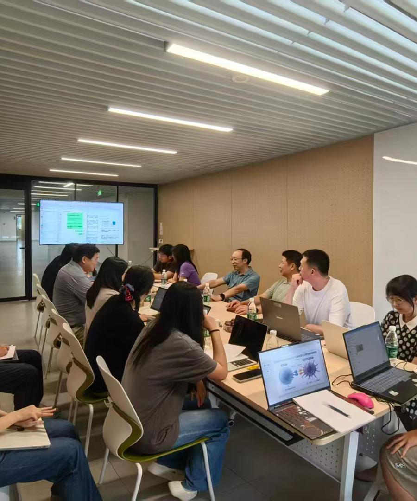

Virtual Cell Library ↗
Explore individual cell records, gene expression and source annotations.
EDUCATION & TRAINING
An open learning community for undergraduate and graduate students, connecting AI methods with scientific research and innovation.
Our platform brings together computing, life sciences, materials, chemistry and energy. Through practical teaching, research training and collaborative projects, students learn to frame questions, use data and models, and test ideas.

Online learning and practical assignments support a progression from foundational knowledge to subject-specific work, project development and research outputs. Our training follows a cycle of question and design, computation and evaluation, experimental validation, and feedback.
Explore the sections below to find online lessons and downloadable study aids.
Chinese-language classroom. Lessons are currently awaiting publication. Each title opens the classroom homepage.
Literature search, SCI fundamentals and journal ranking systems.
Research background, research gaps and contributions.
Course outline to be published.
Course content to be published.
Course content to be published.
Course content to be published.
The three English study aids below were prepared for this directory on October 31, 2026. They are separate from the classroom lessons.
A reading log and a checklist for searching, comparing and citing papers.
Prompts for planning an introduction, methods, results and discussion.
A reusable record for data, computation, validation and next steps.
Open the classroom and select its Papers & Materials section.
Explore individual cell records, gene expression and source annotations.
Inspect antibody sequences and evidence, and prepare candidate shortlists.
Course information checked against the public classroom homepage on October 31, 2026. The classroom is the source of current course availability and materials.